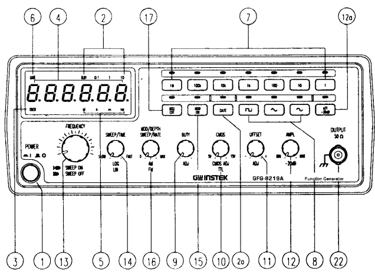
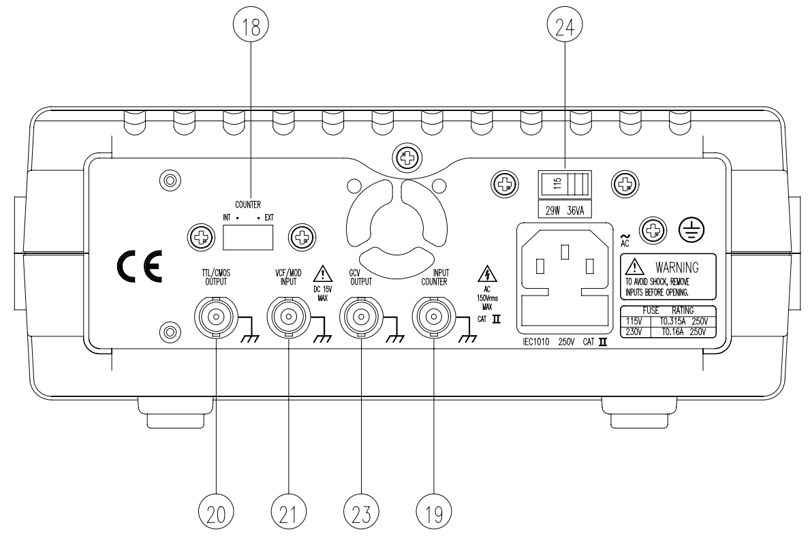

מדריך תפעול אנלוגי ומונה תדר
מחולל אותות (Function Generator) הוא מכשיר אלקטרוני המייצר אותות מתח חילופין הדומים לאלה המופיעים במעגלים חשמליים. המחולל מספק צורות גל שונות (סינוס, ריבוע, משולש) בתדר ובאמפליטודה ניתנים לשינוי. בנוסף, ניתן להוסיף רמת \( DC \) לאות המופק.
חשוב לדעת כי האות המופק מכיל עיוותים קטנים ביחס לצורת הגל התיאורטית. סטייה זו מוגדרת כ-THD (Total Harmonic Distortion), ובדרך כלל עומדת על שברי אחוזים מהגל המקורי.
ה-GFG-8219A הוא מחולל אותות המשלב יצירת פונקציות עם מונה תדר פנימי וחיצוני. הוא מתאים במיוחד לעבודה בסיסית ומהירה במעבדה.

מבט חזיתי

מבט אחורי
| לחצן / בורר | תפקיד |
|---|---|
| Range Buttons | בחירת טווח התדרים (כפולות של 10). |
| Function | בחירת צורת גל (סינוס, ריבוע, משולש). |
| Duty Cycle (בורר נמשך) | שינוי מחזור העבודה של האות. |
| DC Offset (בורר נמשך) | הוספת רמת \( DC \) לאות החילופין (בין \( \pm 10V \)). |
| Amplitude (-20dB) | קביעת עוצמת האות. לחיצה מבצעת הנחתה של 20 \( dB \). |
| Sweep | בורר לקביעת זמן ה-Sweep וסוגו (ליניארי/לוגריתמי). |